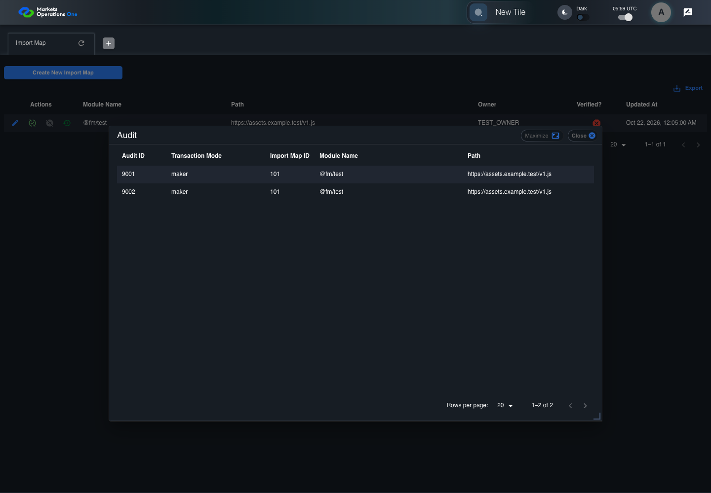

UI-ADM-MAP-014 actual administration UI with step evidence
PASS · application/run-050/ui-adm-map-014-actual-administration-ui-with-step-evidence-918bd6204814-attempt-1 · ACTUAL_APPLICATION_LOCAL_SERVICES
Actual current React administration screens. Controlled browser login supplies UI-ADMIN-01 and TEST_OWNER, or the declared SUPER_USER. Controlled BFF routes return the case-declared records. Other controlled saves persist submitted field values. This run establishes frontend handling only. It does not execute BFF validation, storage, audit generation, or authorization.
2026-10-22T05:59:41.229Z to 2026-10-22T05:59:44.602Z
Assertions and result · Artifact manifest · Exact run inputs and source hashes
Result SHA-256:a627cfcf17bd64de39b6929564ce69d24713632d1c82bd22cb63a65f26648377Machine observations
- ui-origin-admin-requests.json
174e32536b62e99c27f66a024c663de0ee88c71c967f6be980bade10bd12fba5
Screenshot capture: CAPTURED. Named frames: 9.
Step screenshot evidence: COMPLETE. 8/8 canonical steps have execution screenshots.
Canonical step timeline
Given Admin A is authenticated as fixture UI-ADMIN-01 with the case-specific permissions
Execution: PASSED.
1. step-01 Visible state after step 1: Given Admin A is authenticated as fixture UI-ADMIN-01 with the case-specific permissions
2026-10-22T05:59:42.634Z · 1440×1000
Step: /Users/lushevol/code/github/ratan-release-impact/workbench/tasks/ui-test-coverage-20261022/test-cases.md:8574
SHA-256:e3b0f9fc19565c05531c6efe10482168b9bbf39577aa6c46d3b54491467406f9And the Import Map admin screen is open for UI-ADMIN-01; fixture record 101 is inactive and has Path https://assets.example.test/v1.js; its owner is TEST_OWNER; the audit response contains audit IDs 9001 and 9002 for importMapId 101
Execution: PASSED.
2. step-02 Visible state after step 2: And the Import Map admin screen is open for UI-ADMIN-01; fixture record 101 is inactive and has Path https://assets.example.test/v1.js; its owner is TEST_OWNER; the audit response contains audit IDs 9001 and 9002 for importMapId 101
2026-10-22T05:59:43.498Z · 1440×1000
Step: /Users/lushevol/code/github/ratan-release-impact/workbench/tasks/ui-test-coverage-20261022/test-cases.md:8575
SHA-256:8c5c1415a703219dbc7fa910fa08faeb5601d93a8f6d45681b924839af490a8fWhen Admin A clicks icon button named "Audit" inside row with Record Id "101" in the "Import Map" administration data grid
Execution: PASSED.
3. step-03 Visible state after step 3: When Admin A clicks icon button named "Audit" inside row with Record Id "101" in the "Import Map" administration data grid
2026-10-22T05:59:43.749Z · 1440×1000
Step: /Users/lushevol/code/github/ratan-release-impact/workbench/tasks/ui-test-coverage-20261022/test-cases.md:8576
SHA-256:3ae33ba95f499870b083cd66f55031dfdc9596c5faf1d8052bb4942e50808227Then dialog named "Audit" inside the "Import Map" administration tabpanel is visible
Execution: PASSED.
4. step-04 Visible state after step 4: Then dialog named "Audit" inside the "Import Map" administration tabpanel is visible
2026-10-22T05:59:43.801Z · 1440×1000
Step: /Users/lushevol/code/github/ratan-release-impact/workbench/tasks/ui-test-coverage-20261022/test-cases.md:8577
SHA-256:3ae33ba95f499870b083cd66f55031dfdc9596c5faf1d8052bb4942e50808227And row with source identity "9001" inside the data grid in the Audit dialog inside the "Import Map" administration tabpanel is visible
Execution: PASSED.
5. step-05 Visible state after step 5: And row with source identity "9001" inside the data grid in the Audit dialog inside the "Import Map" administration tabpanel is visible
2026-10-22T05:59:43.850Z · 1440×1000
Step: /Users/lushevol/code/github/ratan-release-impact/workbench/tasks/ui-test-coverage-20261022/test-cases.md:8578
SHA-256:3ae33ba95f499870b083cd66f55031dfdc9596c5faf1d8052bb4942e50808227And the source-record identifier cell in row with source identity "9001" inside the data grid in the Audit dialog inside the "Import Map" administration tabpanel equals "101"
Execution: PASSED.
6. step-06 Visible state after step 6: And the source-record identifier cell in row with source identity "9001" inside the data grid in the Audit dialog inside the "Import Map" administration tabpanel equals "101"
2026-10-22T05:59:43.900Z · 1440×1000
Step: /Users/lushevol/code/github/ratan-release-impact/workbench/tasks/ui-test-coverage-20261022/test-cases.md:8579
SHA-256:3ae33ba95f499870b083cd66f55031dfdc9596c5faf1d8052bb4942e50808227And row with source identity "9002" inside the data grid in the Audit dialog inside the "Import Map" administration tabpanel is visible
Execution: PASSED.
7. step-07 Visible state after step 7: And row with source identity "9002" inside the data grid in the Audit dialog inside the "Import Map" administration tabpanel is visible
2026-10-22T05:59:43.950Z · 1440×1000
Step: /Users/lushevol/code/github/ratan-release-impact/workbench/tasks/ui-test-coverage-20261022/test-cases.md:8580
SHA-256:3ae33ba95f499870b083cd66f55031dfdc9596c5faf1d8052bb4942e50808227And the source-record identifier cell in row with source identity "9002" inside the data grid in the Audit dialog inside the "Import Map" administration tabpanel equals "101"
Execution: PASSED.
8. step-08 Visible state after step 8: And the source-record identifier cell in row with source identity "9002" inside the data grid in the Audit dialog inside the "Import Map" administration tabpanel equals "101"
2026-10-22T05:59:44.007Z · 1440×1000
Step: /Users/lushevol/code/github/ratan-release-impact/workbench/tasks/ui-test-coverage-20261022/test-cases.md:8581
SHA-256:3ae33ba95f499870b083cd66f55031dfdc9596c5faf1d8052bb4942e50808227
Additional named frames

The final visible state after the named test assertions.
2026-10-22T05:59:44.121Z · 1440×1000Step: Test source: /Users/lushevol/code/github/ratan-release-impact/workbench/e2e/audit-specs/admin-expanded.spec.ts:15
SHA-256:
3ae33ba95f499870b083cd66f55031dfdc9596c5faf1d8052bb4942e50808227Screenshots establish visible state only. Assertions and traces support functional claims.